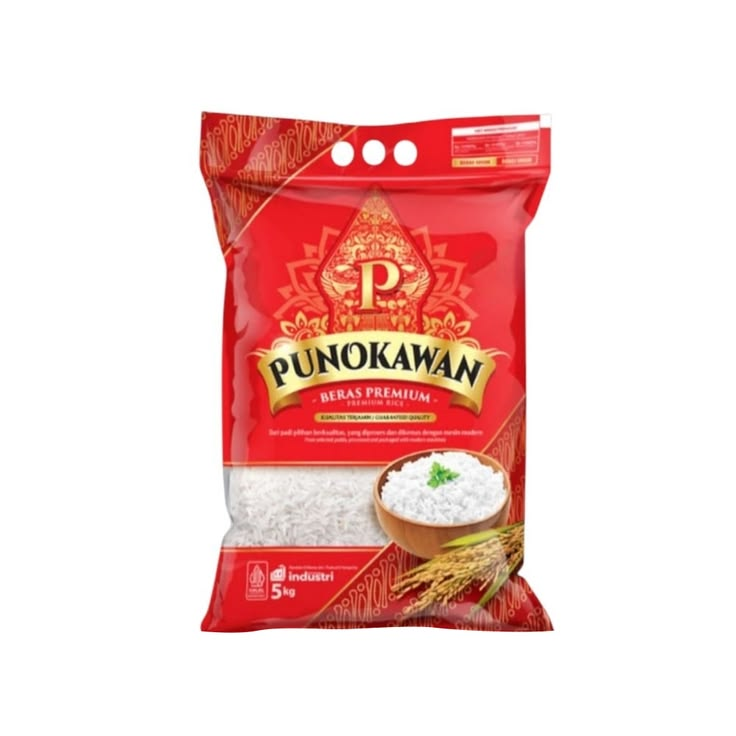
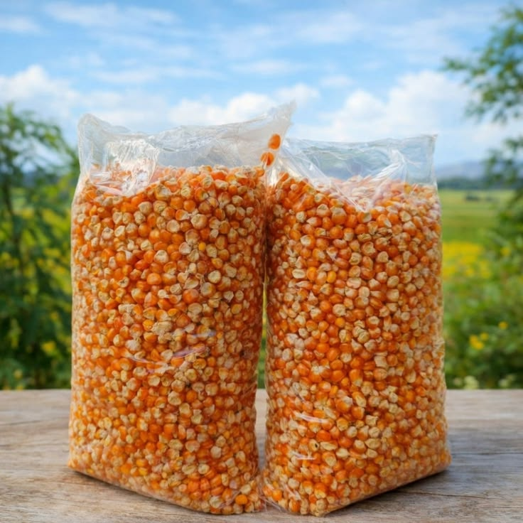
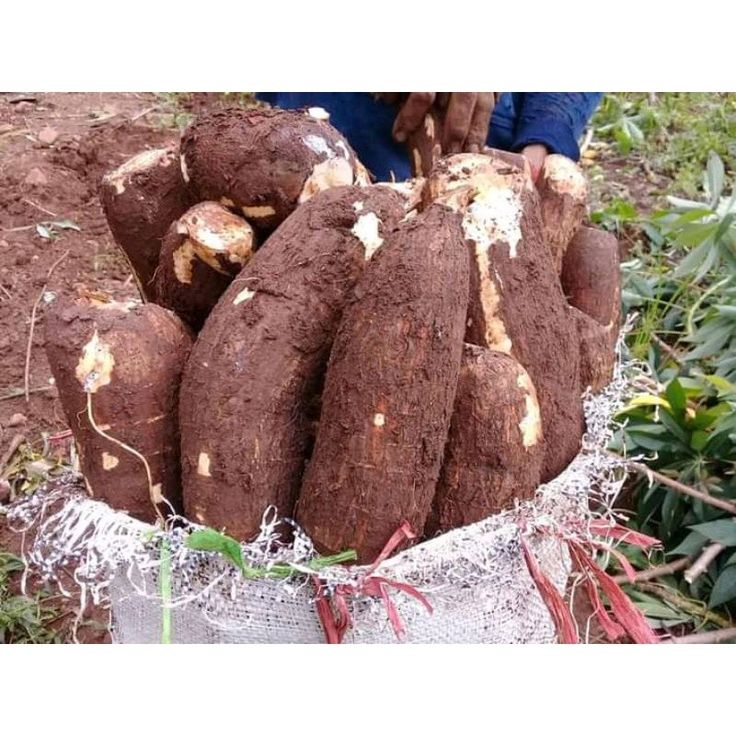

Informasi peluang pasar dan nilai ekonomi komoditas pertanian desa.
Prediksi naik 8% bulan depan
Harga beras diprediksi meningkat karena permintaan pasar yang stabil dan produksi menurun saat musim kemarau.
Prediksi stabil minggu ini
Jagung memiliki pasar industri pakan ternak yang cukup stabil sehingga harga relatif aman.
Prediksi turun 3%
Produksi singkong meningkat sehingga harga pasar diprediksi sedikit menurun.
Perbandingan harga komoditas di beberapa wilayah pasar.
Kemiling Rp 14.500/kg
Kedaton Rp 13.500/kg
Tanjungkarang Pusat Rp 12.000/kg
Beli hasil panen langsung dari petani desa.

Beras premium hasil panen petani lokal dengan kualitas terbaik.

Cocok untuk pakan ternak dan kebutuhan industri pangan.

Hasil panen langsung dari petani desa tanpa perantara.